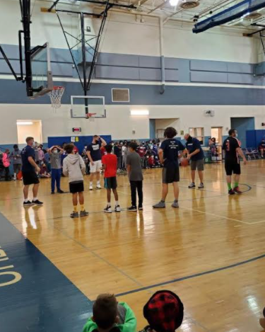

Campus Life
Science Room
This is where most of the experimenting happens for 6th grade.
PE
This is where we do PE.(For all grades)
Achievements
2013-2014
* A UMS student won 2nd Place and another an Honorable Mention in the Maryland Judiciary's Conflict Resolution Day Student Bookmark Art Contest. * Three UMS students were accepted into the MAY Fair, Maryland Area Youth Juried Arts & Crafts Festival.
* The UMS MATHCOUNTS team won the Frederick Chapter Competition, where UMS students also took second and third place in the individual rankings.
* The UMS Science Olympiad team won 1st place at the Frederick County Invitational on January 18. They also brought home five 3rd place medals, three 2nd place medals and an amazing total of five 1st place medals. * UMS had one finalist and 2 semi-finalists in the NASA Cassini Scientist for a Day Essay Contest.
What's New
-
Staff VS Students
The annual Staff vs. Student Basketball Game was on December 22, 2021. The game was definitely a blowout, with Mr. Keiling and Mr. Johnson leading the staff to the end. I interviewed multiple people during, and after the game. Ademide Akinsola, a fan watching the event, claims that the reason that the staff are beating the students currently is because “the staff have an algorithm and students also need to pass the ball more often than they do." What he means by algorithm is that the staff listen to each other and find their teammates open for a pass. I asked Ademide who he thinks the best players on the staff team are, and this was his response, ¨I think that Mr. Johnson and Mr. Kibler are probably the best players on the staff team.¨ After having a brief interview with a few of the fans, I headed to the pep band corner to talk with Mrs. Hill, the Urbana Middle School band director [teacher]. (Throughout the game, fans yelled, “The staff are cheating!”) Mrs. Hill’s response to my question about people yelling that the staff are cheating was, “ I don’t think they are cheating. They are just here to have fun. They are just competitive, that's all.” Around 9:14 am, the staff began to rack up even more points, with the score being: Staff: 46 and Students: 21. Around the end of the game I had a brief discussion with the Invention and Innovation teacher, Mr. Wax. I asked him why he thinks the staff are winning and his response to my question was, “students just like to shoot and not pass.” This certainly seemed to be a common topic of discussion on this day. Once again, the game was a blowout, no doubt about it, but what I saw astounded me. I saw students screaming and yelling during the game. The students just wanted to win at all costs, even if it meant blaming the loss on the staff or the referee. It may have only been a middle school game that was supposed to be fun but it truly felt and sounded like Game 7 of the NBA Finals. I interviewed Mr. Keiling, a Physical Education teacher at Urbana Middle School and the Linganore High School varsity baseball coach. I asked him, “Why do you think the students lost? His response was “I thought they (students) brought a lot of energy. They just didn’t come through on the offensive end.” Overall, I think that the students have a lot of potential. They just didn’t execute properly and next year they need to focus on proper warm ups, passing, and looking for opportunities to make smart shots. Let's see what next year brings!!
Contact Us